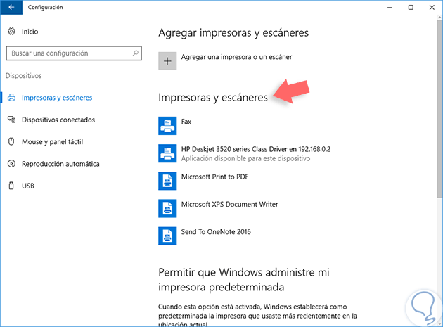

Para iniciar el proceso de la instalación del rol vamos a ir al Administrador del servidor o Server Manager y seleccionamos la opción Agregar
roles y características. En las primeras ventanas debemos seleccionar la instalación basada en roles y características (ventana Tipo de instalación)
y seleccionar el servidor donde hemos de instalar el rol (ventana Selección del servidor).
Una vez definido esto pasamos a la ventana Roles de servidor donde debemos activar la casilla Servicios de impresión y documentos y se desplegara
la siguiente ventana.
Allí pulsamos en Agregar características y pulsamos de nuevo Siguiente en la ventana principal. En la ventana de Características no será necesario
añadir nada por lo cual pulsamos Siguiente. Posteriormente veremos la siguiente ventana donde se muestra una breve pero completa descripción acerca
del rol de impresión que vamos a instalar.
Pulsamos en Siguiente y acá podremos definir los servicios del rol de impresión donde tenemos las siguientes opciones:
Seleccionamos el primer servicio, Servidor de impresión, y pulsamos Siguiente para ver la ventana de conformación de instalación del rol.
Pulsamos en el botón Instalar para iniciar el respectivo proceso de instalación del rol en Windows Server 2016.
Esperamos a que se instale de manera correcta el rol para cerrar el asistente. Podemos ver en el panel del Administrador del servidor que se
ha añadido el nuevo rol de impresión.
Para iniciar el proceso de configuración y uso de los servicios de impresión en Windows Server 2016 vamos a ir a la siguiente ruta:
Una vez abramos el administrador debemos agregar el controlador de la impresora que será usada como central para el servidor de impresión.
Para ello seleccionamos nuestro servidor y damos clic derecho sobre la línea Controladores y seleccionamos la opción Agregar controlador.
Se desplegará la siguiente ventana.
Pulsamos en Siguiente y a continuación debemos seleccionar la arquitectura del procesador donde está instalado el rol.
De nuevo pulsamos en Siguiente y se desplegara la siguiente ventana donde debemos seleccionar el modelo de nuestra impresora o tenemos
las siguientes opciones:
1) Windows Update
2) Usar Disco
Una vez definidos los controladores se desplegará la siguiente ventana. Pulsamos Finalizar para salir del asistente.
Ahora podemos ver que se han establecido los controladores de la impresora seleccionada. De la misma forma debemos agregar los controladores para
la arquitectura de 32 bits ya que dentro de la organización tendremos equipos con 32 y 64 bits.
Una vez tengamos los respectivos controladores el siguiente paso consiste en añadir la impresora la cual será donde todos los usuarios enviaran sus
respectivas impresiones, para esto realizaremos el siguiente proceso.
Desde el administrador de impresión damos clic derecho sobre la opción Impresoras y seleccionamos la opción Agregar impresora.
En la ventana desplegada debemos seleccionar el método de instalación de la impresora, ya que puede estar conectada en red, por un servicio web o podemos
crear un nuevo puerto. En este caso debemos seleccionar la opción Agregar una impresora TCP/IP.
A continuación, debemos ingresar la dirección IP o nombre del equipo donde se encuentra la impresora y debemos desmarcar la casilla “Detectar automáticamente
que controlador de impresora se debe usar”.
Veremos que el sistema inicia el proceso de búsqueda de la impresora.
En la siguiente ventana debemos definir el controlador para la impresora por lo cual seleccionamos el controlador que hemos adicionado
con anterioridad.
Pulsamos Siguiente y ahora debemos establecer el nombre que será reflejado en la impresora de red y debemos confirmar que la casilla
“Compartir esta impresora” se encuentre marcada.
Al pulsar Siguiente veremos un resumen de toda la tarea realizada. Pulsamos Siguiente para finalizar la configuración.
Podemos ver que la impresora ha sido añadida de forma correcta en el Administrador de impresión.
Para conectarnos desde cualquier equipo cliente para hacer uso de esta impresora debemos acceder usando el comando Ejecutar e ingresando la dirección
IP del equipo donde está alojada la impresora, en este ejemplo es la 192.168.02 y nos conectaremos desde Windows 10.
Una vez accedamos al equipo remoto daremos clic derecho sobre la impresora y seleccionamos la opción Conectar.
Inicia el proceso de conexión.
Ahora si accedemos a Impresoras y escáneres veremos la impresora lista para su uso.
